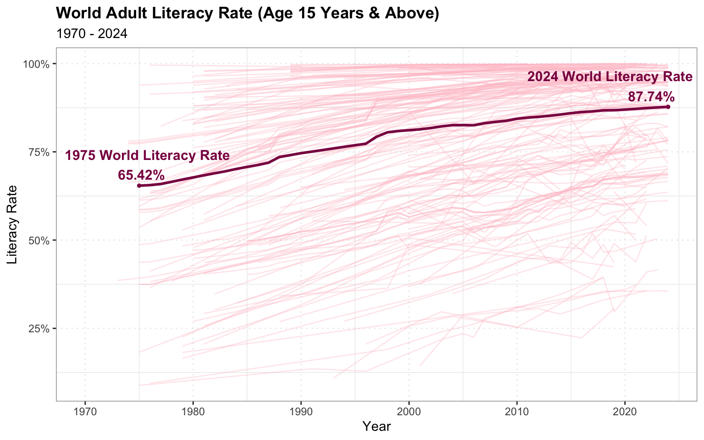
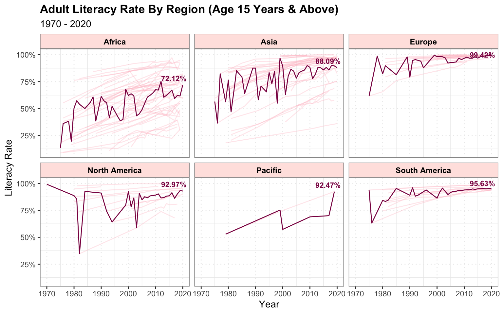
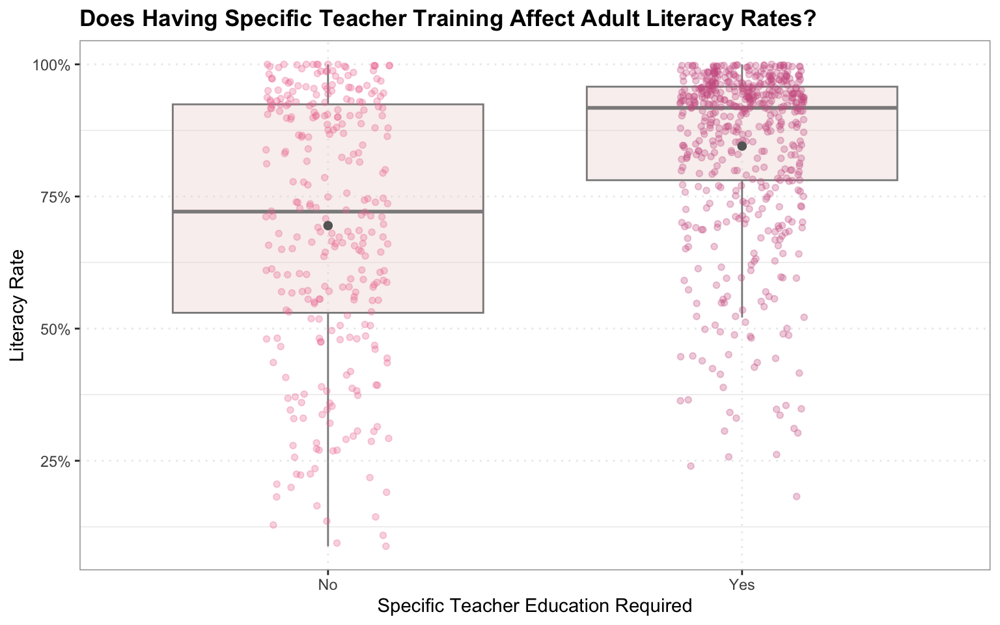
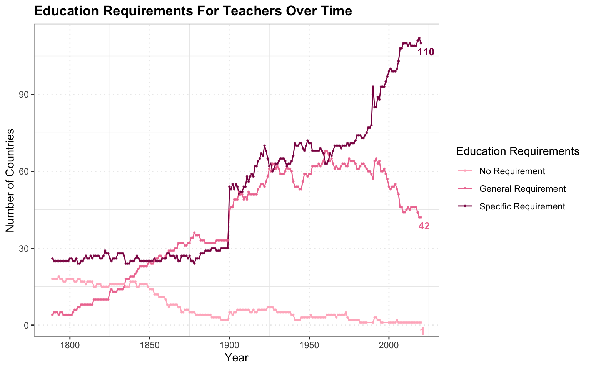
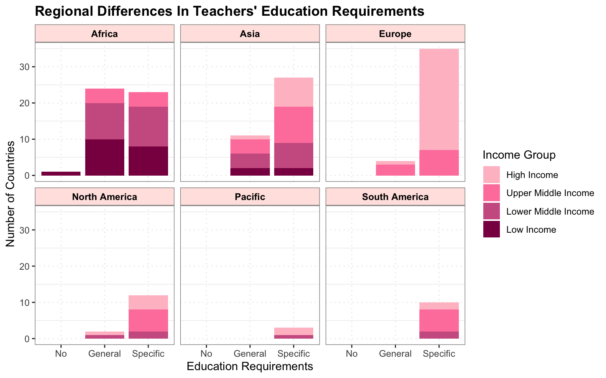

library(tidyverse)
library(readxl)
library(ggrepel)
edu <- "~/Desktop/DS350/DS350 SP/data/EPSM_dataset_full.xlsx"
literacy <- "~/Desktop/DS350/DS350 SP/data/literacy_rates.xls"
column_names <- read_excel(edu, n_max = 0)
types <- rep("guess", ncol(column_names))
types[c(16, 24, 28, 29, 39, 41, 51, 65)] <- "text"
data1 <- suppressWarnings(read_excel(edu, col_types = types)) %>%
select(country_name, country_text_id, year, compuls_exist, free_exist, compuls_exempt, compuls_years, national_civics_prim, national_civics_sec, national_civics_high, national_civics_contents, subjects_ban, books_oblig, military_edu_inst, edu_dep, edu_power, operate_prim, operate_sec, operate_high, school_lead_prim, school_lead_sec, teacher_training_presence, teacher_training_sour, teacher_training_ideology) %>%
rename(`Country Code` = country_text_id)
data2 <- read_excel(literacy, skip = 2) %>%
select(-`Indicator Code`) %>%
pivot_longer(cols = matches("^\\d{4}$"), names_to = "year", values_to = "literacy_rate") %>%
mutate(year = as.numeric(year))
final <- data1 %>%
left_join(data2, by = c("Country Code", "year")) %>%
select(-`Country Name`)Semester Project
Do Education Policies Matter?
Introduction
Literacy is one of the most fundamental indicators of a country’s educational and socioeconomic development. Higher literacy rates are associated with improved employment opportunities, increased economic productivity, better health outcomes, and greater civic participation. As a result, governments around the world have implemented a range of education policies designed to improve learning outcomes, including compulsory education laws and minimum qualification requirements for teachers.
Among these policies, teacher quality has become an increasingly important focus of education reform.This report explores global trends in adult literacy rates and examines how they relate to education policies across countries and regions. Specifically, it investigates changes in literacy over time, the global adoption of teacher education requirements, and the relationship between specific teacher training and literacy outcomes.
Analysis
Global Literacy
data2 %>%
drop_na(literacy_rate) %>%
ggplot(aes(x = year, y = literacy_rate, group = `Country Name`)) + geom_line(data = ~ filter(.x, `Country Name` != "World"), color = "pink", alpha = 0.35) + geom_line(data = ~ filter(.x, `Country Name` == "World"), color = "deeppink4", linewidth = 1) + labs(title = "World Adult Literacy Rate (Age 15 Years & Above)", subtitle = "1970 - 2024", x = "Year", y = "Literacy Rate") + theme_bw() + scale_y_continuous(labels = scales::label_percent(scale = 1)) + geom_text(data = ~ filter(.x, `Country Name` == "World", year == 2024), aes(label = paste0("2024 World Literacy Rate\n", round(literacy_rate, 2), "%"), vjust = -0.2, hjust = 0.85), size = 4, color = "deeppink4", fontface = "bold") + theme(panel.grid.major = element_line(linetype = "dotted"), panel.border = element_rect(color = "grey60", fill = NA), plot.title = element_text(face = "bold")) + geom_point(data = ~ filter(.x, `Country Name` == "World", year == 2024), color = "deeppink4", size = 1) + geom_text(data = ~ filter(.x, `Country Name` == "World", year == 1975), aes(label = paste0("1975 World Literacy Rate\n", round(literacy_rate, 2), "%"), vjust = -0.2, hjust = 0.45), size = 4, color = "deeppink4", fontface = "bold") + geom_point(data = ~ filter(.x, `Country Name` == "World", year == 1975), size = 1, color = "deeppink4")
Global adult literacy has improved steadily over the past five decades, increasing from 65.42% in 1975 to 87.74% in 2024. Although most countries have experienced significant gains in literacy over time, the pace of improvement has varied considerably across nations. Many countries have now achieved literacy rates approaching 100%, reflecting substantial progress in education systems. However, considerable disparities remain, with some nations continuing to report literacy rates well below the global average.
region_avg <- final %>%
drop_na(literacy_rate, Region) %>%
group_by(Region) %>%
filter(year == max(year)) %>%
summarise(year = first(year), avg_lit = mean(literacy_rate, na.rm = TRUE), .groups = "drop")
final %>%
drop_na(literacy_rate, Region) %>%
ggplot(aes(x = year, y = literacy_rate)) + geom_line(aes(group = country_name), color = "pink", alpha = 0.35) + stat_summary(aes(group = 1), fun = mean, geom = "line", color = "deeppink4") + facet_wrap(~ Region) + theme_bw() + scale_y_continuous(labels = scales::label_percent(scale = 1)) + labs(title = "Adult Literacy Rate By Region (Age 15 Years & Above)", subtitle = "1970 - 2020", x = "Year", y = "Literacy Rate") + theme(strip.background = element_rect(fill = "mistyrose", colour = "grey55"), strip.text = element_text(face = "bold", size = 9, color = "black"), panel.border = element_rect(color = "grey55", fill = NA), plot.title = element_text(face = "bold"), panel.grid.major = element_line(linetype = "dotted")) + geom_text_repel(data = region_avg, aes(x = year, y = avg_lit, label = paste0(round(avg_lit, 2), "%")), color = "deeppink4", inherit.aes = FALSE, size = 3, direction = "y", nudge_y = 1.5, fontface = "bold")
Although adult literacy rates have increased across most regions over time, the extent of improvement has differed considerably. By 2020, Europe had the highest average adult literacy rate at 99.42%, whereas Africa recorded the lowest at 72.12%. These regional differences highlight the unequal progress made in improving literacy.
Correlation Between Literacy Rate and Teacher Education Requirement
final %>%
drop_na(teacher_training_presence, literacy_rate) %>%
mutate(specific_training = case_when(
teacher_training_presence == 3 ~ "Yes",
teacher_training_presence %in% c(1, 2) ~ "No"
),
specific_training = factor(specific_training, levels = c("No", "Yes"))) %>%
ggplot(aes(x = specific_training, y = literacy_rate)) + geom_boxplot(outlier.shape = NA, fill = "mistyrose2", color = "grey55", alpha = 0.35) + geom_jitter(aes(color = specific_training), width = 0.15, alpha = 0.3, size = 1.4) + stat_summary(fun = mean, geom = "point", shape = 20, size = 3, color = "grey40") + scale_y_continuous(labels = scales::label_percent(scale = 1)) + labs(title = "Does Having Specific Teacher Training Affect Adult Literacy Rates?", x = "Specific Teacher Education Required", y = "Literacy Rate", color = "") + theme_bw() + theme(legend.position = "none", panel.border = element_rect(color = "grey60", fill = NA), panel.grid.major = element_line(linetype = "dotted"), plot.title = element_text(face = "bold")) + scale_color_manual(values = c("No" = "palevioletred2", "Yes" = "hotpink3"))
Education plays a fundamental role in improving literacy rates, with teachers serving as one of the most influential factors in students’ learning experiences. The analysis suggests that countries requiring teachers to complete specific education in the subjects they teach tend to achieve higher adult literacy rates. Both the median literacy rate and the mean literacy rate (represented by the grey dot) are noticeably higher among countries with specific teacher education requirements than among those without such requirements.
In addition, literacy outcomes are more consistent in countries that require specific teacher education. This group exhibits a narrower distribution of literacy rates, indicating less variation between countries. In contrast, countries without specific teacher education requirements display much greater variability, with literacy rates ranging from below 20% to nearly 100%.
While requiring teachers to have specific education is associated with higher literacy rates, not every country with that requirement has high literacy rate, and some countries without that requirement still have literacy rates above 90%.
Teacher Education Requirement
teach_edu <- final %>%
drop_na(teacher_training_presence) %>%
mutate(teacher_training_presence = factor(teacher_training_presence, levels = c(1, 2, 3), labels = c("No Requirement", "General Requirement", "Specific Requirement"))) %>%
group_by(year, teacher_training_presence) %>%
summarise(countries = n_distinct(country_name), .groups = "drop")
edu_label <- teach_edu %>%
filter(year == 2020)
teach_edu %>%
ggplot(aes(x = year, y = countries, color = teacher_training_presence)) + geom_line() + geom_point(size = 0.5, alpha = 0.8) + labs(title = "Education Requirements For Teachers Over Time", x = "Year", y = "Number of Countries", color = "Education Requirements") + theme_bw() + theme(panel.grid.major = element_line(linetype = "dotted"), panel.border = element_rect(color = "grey60", fill = NA), plot.title = element_text(face = "bold")) + geom_text(data = edu_label, aes(label = countries), show.legend = FALSE, vjust = 1.65, hjust = 0.2, size = 3.5, fontface = "bold") + scale_color_manual(values = c("No Requirement" = "pink1", "General Requirement" = "palevioletred2", "Specific Requirement" = "deeppink4"))
Although higher teacher education requirements cannot be concluded to cause improvements in literacy rates, they are positively associated with higher literacy outcomes. Over the past two centuries, many countries have progressively strengthened their teacher qualification standards, moving away from having no formal requirements toward requiring specific teacher education as the norm. During a similar period, the global adult literacy rate increased substantially, rising from 65.42% in 1975 to 87.74% in 2024. While this parallel trend does not establish a causal relationship, it suggests that stronger teacher education requirements may contribute to improved literacy outcomes when combined with other factors such as compulsory education policies, adequate educational resources, and broader socioeconomic development.
final %>%
drop_na(teacher_training_presence, Region) %>%
filter(year == 2020) %>%
mutate(IncomeGroup = factor(IncomeGroup, levels = c("High income", "Upper middle income", "Lower middle income", "Low income"), labels = c("High Income", "Upper Middle Income", "Lower Middle Income", "Low Income"))) %>%
mutate(teacher_training_presence = factor(teacher_training_presence, levels = c(1, 2, 3), labels = c("No", "General", "Specific"))) %>%
ggplot(aes(x = teacher_training_presence, fill = IncomeGroup)) + geom_bar() + facet_wrap(~ Region) + labs(title = "Regional Differences In Teachers' Education Requirements", x = "Education Requirements", y = "Number of Countries", fill = "Income Group") + theme_bw() + scale_fill_manual(values = c("High Income" = "pink", "Upper Middle Income" = "palevioletred1", "Lower Middle Income" = "hotpink3", "Low Income" = "deeppink4")) + theme(strip.background = element_rect(fill = "mistyrose", colour = "grey55"), strip.text = element_text(face = "bold", size = 9, color = "black"), panel.border = element_rect(color = "grey55", fill = NA), plot.title = element_text(face = "bold"), panel.grid.major = element_line(linetype = "dotted"))
Today, many countries have adopted the practice of requiring teachers to complete specific education before teaching in primary and secondary schools. However, this requirement is not yet universal. Many countries without specific teacher education requirements are concentrated in Africa, and the majority belong to the middle income or low income groups. This pattern suggests that differences in teacher education requirements may be partly associated with levels of economic development, as countries with greater financial resources are generally better positioned to invest in teacher preparation and professional training.
Improving literacy rates benefits the world in many ways because literacy is closely linked to education, economic development, health, and social well-being. Among the regions examined, Africa recorded the lowest average adult literacy rate in 2020 of 72.12%, compared with Europe, which had the highest average literacy rate of 99.42%. Strengthening teacher education requirements may be one strategy to support improvements in literacy across African nations.
Conclusion
In conclusion, this analysis examined the relationship between education policies and adult literacy rates by exploring global literacy trends and teacher education requirements across regions. The results show that global adult literacy has improved substantially over the past five decades, increasing from 65.42% in 1975 to 87.74% in 2024. Despite this progress, considerable disparities remain between regions, with Europe recording the highest average literacy rate and Africa the lowest.
The findings also indicate that countries requiring specific teacher education generally achieve higher and more consistent literacy rates than countries without such requirements. In addition, many nations have progressively strengthened teacher qualification standards over time. Although these trends suggest a positive association between stronger teacher education requirements and higher literacy outcomes, the analysis does not establish a causal relationship.
Overall, the results highlight the importance of investing in teachers to improve literacy outcomes worldwide. Strengthening teacher education requirements may help reduce regional disparities and contribute to continued improvements in literacy. As literacy is closely linked to economic growth, public health, and social development, policies that promote higher standards for teachers have the potential to generate long-term benefits for individuals, communities, and society as a whole.